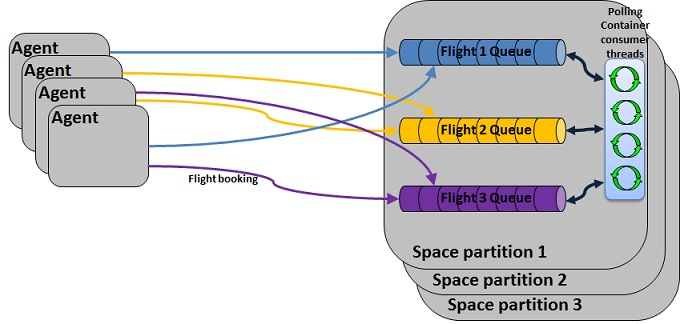

The FIFO grouping feature is designed to allow for efficient processing of events with partial ordering constraints. To better understand FIFO groups, let's first examine the constraints of total ordering, i.e. What it takes to process events in the exact order in which they arrive. There are two elements that effectively limit the scalability of processing events with total ordering:
In most cases, your application does not require total ordering, but rather ordering within groups of events. Let's take a flight booking system as an example. Such an system should process the bookings for each flight one by one, to avoid conflicting bookings for the same seats and ensure fairness, but it can process many flights simultaneously, since there's no relevance to the order of processing across different flights. The FIFO groups feature allows you to implement this kind of scenario easily by designating a "FIFO group" field. The value of this field indicates the unique group identifier. In the above example, this would be the flight number, so effectively your application can process many bookings simultaneously for different flights, but it will never process two bookings for the same flight simultaneously. In more generic terms, the FIFO groups capability ensures the following:

FIFO-Grouping can be used with financial systems to process trade orders , in healthcare systems to processes patient medical data , with transportation systems to process reservations , with airlines systems to process flight schedule , with billing system to processes payments, etc. With the flight reservation system scenario several reservations can be processed simultaneously but the reservations of a particular fight must be processed exclusively and in FIFO order.
FIFO-Grouping ("FG') enables reading/taking certain space entries in FIFO order (by order of insertion), and is mainly used as an enhancement of the openspaces polling-containers. When a property is declared with the SpaceFifoGroupingProperty attribute ("the FG designated property'), a read/take operation with the FIFO_GROUPING_POLL modifier will return all space entries that match the selection template in FIFO order. Different values of the FG property define groups of space entries that match that value - FIFO ordering exists within each group and not between different groups.
The selected group is locked until the operation is terminated- the operation transaction is committed/ aborted. See the Exclusivity section for more information.
Any class that supports FG is logically divided to groups according to the FG designated property. This property must be indexed and will be automatically indexed by the system if an index definition does not exist for it. An additional data structure is kept for this property in order to assist in traversing the different groups.
In the selecting template a null value will generally be rendered for this property which stands for bring any available group. An available group is any FG that matches the selection template and is not currently locked by another FG thread (see Exclusivity section).
If the selecting template (Pojo) has a value for a property other than the FG designated property - this property can be indexed (like for any regular read/take operation) and in addition a SpaceFifoGroupingIndex attribute can be added to it in order to assist in efficient traversal.
In this case the system will create a compound index that contains this property and the FG designated property.
For example, if a polling container is responsible for all the new reservations (reservations with processingState = NEW), then it is recommended to declare a SpaceFifoGroupingIndex on the processingState property.
This would help to achieve better performance when searching for reservations of certain flight that have processingState = NEW.
SpaceFifoGroupingIndex affects the size of the footprint.
Once a FG operation returns with a result, the relevant group(s) is locked to other FG threads until the transaction is terminated. The locked group is the group with the value returned in the FG designated property and matching the selecting template. The exclusivity rule is as follows: A group can be locked by a requesting template if no other template is locking the same FG designated property value, or - if another template is locking the same FG designated property value, the intersection between the 2 groups is null.
For example:
Lets assume we have an Order POJO template with property named label marked with SpaceFifoGroupingProperty attribute and property named state marked with SpaceFifoGroupingIndex attribute .
If polling container A got a FG with Label = "LABEL1" using an Order POJO with State property = null, no other FG thread/container will be able to access the FG designated by "LABEL1".
If on the other hand polling container B got a FG with Label = "LABEL2" using an Order pojo with State property = 0, polling container C will be able to get FG with same label "LABEL2" using an Order pojo with State = 1, since the intersection between the groups is null. Exclusivity is released upon transaction termination.
When a FG template locks a group, its first entry is locked under a transaction so it cannot be accessed by any destructive space operation. The other entries in the group are not physically locked and may be operated-upon by non FG templates. If a FG template which is intending to lock a group encounters its first entry locked under a transaction by a non FG template - this group is abandoned in order not to create a gap (by skipping the first entry)
Specifying which property of a class is the FG property is done using attributes or gs.xml.
[SpaceClass]
public class FlightReservation
{
[SpaceFifoGroupingProperty(Path = "FlightNumber")]
public FlightInfo Info { get; set; }
}
<gigaspaces-mapping>
<class name="com.gigaspaces.examples.FlightReservation">
<fifo-grouping-property Name="Info" Path=" FlightNumber" />
</class>
</gigaspaces-mapping>
Specifying which properties of a class are a FG index is done using attributes or gs.xml.
[SpaceFifoGroupingIndex]
public State ProcessingState { get; set; }
[SpaceFifoGroupingIndex(Path = "Id")]
public Person Customer { get; set; }
<gigaspaces-mapping>
<class name="com.gigaspaces.examples.FlightReservation />
<property name="ProcessingState">
<fifo-grouping-index />
</property>
<property name="Customer">
<fifo-grouping-index Path="Id"/>
</property>
</gigaspaces-mapping>
Take the first entry from an available FG (TakeReceiveOperationHandler).
Take multiple: take entries from available FG. No ordering between different groups. Entries of same groups may not be in adjacent positions.
read the first entry from an available FG. In this pattern entry property may be changed and the operation ending with update. For example- a ProcessingState property which is initially 0, some FG polling container querying for 0 and changing it to 1, other container querying for 1 and changing to 2 etc until a container querying for the final state with take.
Note that in such implementation the ProcessingState property should better be defined as SpaceFifoGroupingIndexAttribute.
(ExclusiveReadReceiveOperationHandler)
read entries from available FG. No ordering between different groups. Entries of same groups may not be in adjacent positions. (openspaces MultiExclusiveReadReceiveOperationHandler)
To execute read/take operations with FG, use the TakeModifiers.FifoGroupingPoll modifier. For example:
proxy.Take<FlightReservation>(new FlightReservation(), transaction, timeout, TakeModifiers.FifoGroupingPoll);
If class FlightReservation isn't declared with a FG property, an exception will be thrown.
When registering for polling events use the FifoGroupingReceiveHandler<TData>.UseFifoGrouping = true
to instruct the space that events should be sent to the client in FIFO order (grouping by the fifoGroupingProperty that should have been declared for the space class).
Here is a simple example of a polling event container construction, using FifoGrouping:
[PollingEventDriven]
public class FlightReservationEventListener
{
[EventTemplate]
public FlightReservation UnprocessedData()
{
return new FlightReservation(null, State.NEW_RESERVATION);
}
[SpaceDataEvent]
public FlightReservation EventListener(FlightReservation event)
{
//process reservation here and return the processed reservation.
}
[ReceiveHandler]
public IReceiveOperationHandler<FlightReservation> ReceiveHandler()
{
handler = new ExclusiveReadReceiveOperationHandler<FlightReservation>();
handler.UseFifoGrouping = true;
return handler;
}
}
Constructing the polling container that uses the FlightReservationEventListener class as the event listener, and starting it.
ISpaceProxy spaceProxy = // either create the SpaceProxy or obtain a reference to it
IEventListenerContainer<FlightReservation> eventListenerContainer = EventListenerContainerFactory.CreateContainer<FlightReservation>(spaceProxy, new FlightReservationEventListener());
eventListenerContainer.Start();
// when needed to dispose of the container
eventListenerContainer.Dispose()
PollingEventListenerContainer<FlightReservation> pollingEventListenerContainer = // create or obtain a reference to a polling container
ExclusiveReadReceiveOperationHandler<FlightReservation> receiveHandler = new ExclusiveReadReceiveOperationHandler<FlightReservation>();
receiveHandler.UseFifoGrouping = true;
pollingEventListenerContainer.ReceiveOperationHandler = receiveHandler;
pollingEventListenerContainer.Template = new FlightReservation(null, State.NEW_RESERVATION);
pollingEventListenerContainer.DataEventArrived += new DelegateDataEventArrivedAdapter<FlightReservation,FlightReservation>(FlightReservationProcessData).WriteBackDataEventHandler;
// when needed dispose of the container
pollingEventListenerContainer.Dispose();
Event Processing Method
public FlightReservationProcessData(IEventListenerContainer<FlightReservation> sender, DataEventArgs<FlightReservation> e)
{
FlightReservation reservation = e.Data;
//process the reservation here and return the processed reservation
}
Declaring both SpaceFifoGroupingProperty or SpaceFifoGroupingIndex and SpaceIndex (type EQUAL, ORDERED or EQUAL_AND_ORDERED) with the same path will yield one index with the SpaceIndex type.
Declaring only SpaceFifoGroupingProperty or SpaceFifoGroupingIndex will yield one index, type EQUAL.
All property's FG declarations (both SpaceFifoGroupingProeprty and SpaceFifoGroupingIndex) are inherited in sub classes.
SpaceFifoGroupingProperty is not allowed.SpaceFifoGroupingIndex is allowed in order to add more FG indexes.
For example, declaring SpaceFifoGroupingIndex(Path="a"), overriding in subclass and declaring SpaceFifoGroupingIndex(Path="b") will yield two FG indexes: property a index and property b index (both of type EQUAL if no SpaceIndex with ORDERED or EQUAL_AND_ORDERED type was declared).SpaceFifoGroupingProperty and SpaceFifoGroupingIndex cannot be used as dynamic indexes.SpaceFifoGroupingProperty and SpaceFifoGroupingIndex cannot be used as collection indexes.
(e.g. declaring SpaceFifoGroupingProperty( Path="\[*\]") is not allowed).
FIFO operation is not supported for FG template - it is ignored.
If the template is a SQL query template, only queries that can be performed in a single call to the space are supported (an exception is thrown).
FG operations must be performed under a transaction.
There can be only one FG property per type.
A FG index cannot be declared on some type's property without existence of a FG property for that type.
The following attributes cannot be used with the FG property/index attributes for the same property:
SpaceVersion
SpacePersist
SpaceDynamicProperties
SpaceExclude.SpaceProperty.StorageType Different than OBJECTSpaceFifoGroupingIndex if footprint is not a crucial issue.SpaceFifoGroupingProperty) which are used with >, >=, < , <= conditions - the index cannot be used in the scan (because no FIFO order is maintained in an ordered index).